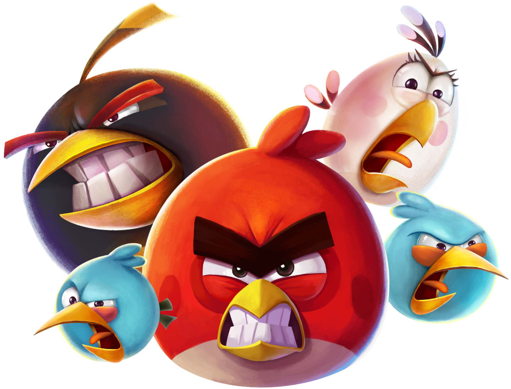
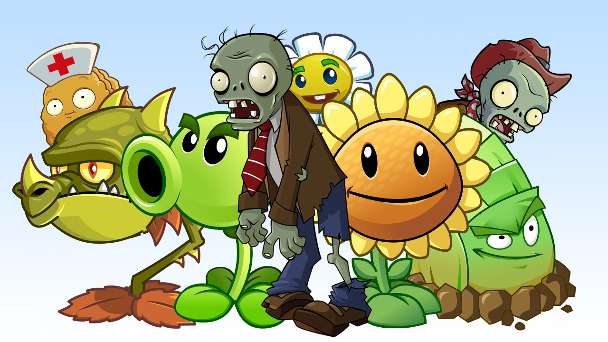

Найкращі ігри на телефон (без підключення до інтернету)
Усі перелічені ігри перевірені часом та мільйонами гравців
1. Subway Surfers
Це відеогра в жанрі нескінченного раннера, розроблена та видана Kiloo&SYBO. Гравець бере на себе роль звичайного підлітка
(або, в окремих випадках, юнака), який здійснює акти вандалізму над поїздом метро, його ловлять Інспектор та його собака

2. Angry Birds 2
Важко знайти геймера, який не знав би про франшизу Angry Birds.
«Злі пташки» вийшли далекого 2009 року і швидко здобули популярність.
2015 року відбувся реліз другої частини.
Фішка серії – у простоті.
Вам потрібно грати за пташок і протистояти злим зеленим свиням.
На ваш вибір є велика кількість пернатих: вибухових, заморожених, пташок-бумерангів та багатьох інших.
Ви запускаєте ваших соратників за допомогою рогатки і намагаєтесь ліквідувати всіх свиней на локації.
Рівнів у Angry Birds 2 дуже багато, гра точно не встигне набриднути.

3.Plants vs. Zombies
У Plants vs. Zombies напевно грали багато хто на ПК, смартфонах або навіть консолях. Перша гра серії вийшла у 2009 році,
проте потім франшизу почали поступово розвивати та вивели її на рівень повноцінного екшену від третьої особи. У першій частині
вам доведеться захищатися від орд мертвих, що ожили, за допомогою рослин. У грі є сотні рівнів із різними обмеженнями та умовами.
Наприклад, чим далі ви зайдете, тим складнішими і сильнішими будуть зомбі. Але так само потужніше
ставатимете і ви. Ще в проекті є повноцінні боси, для битви з якими потрібно включати кмітливість.

Інші наші статті